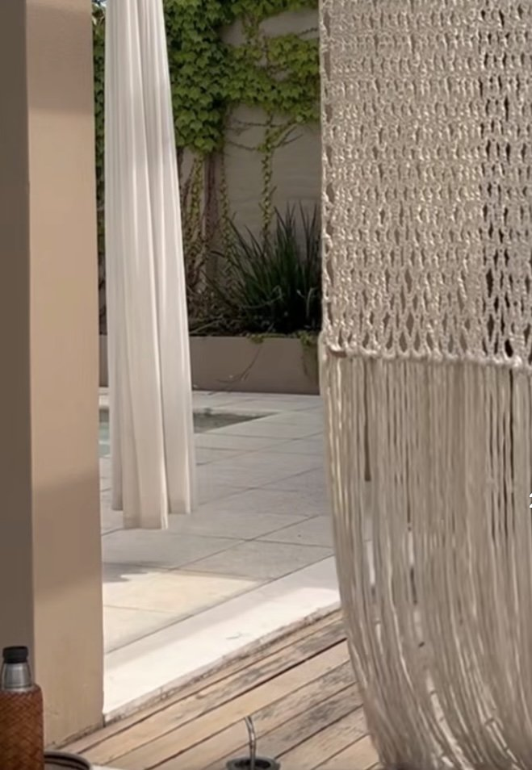
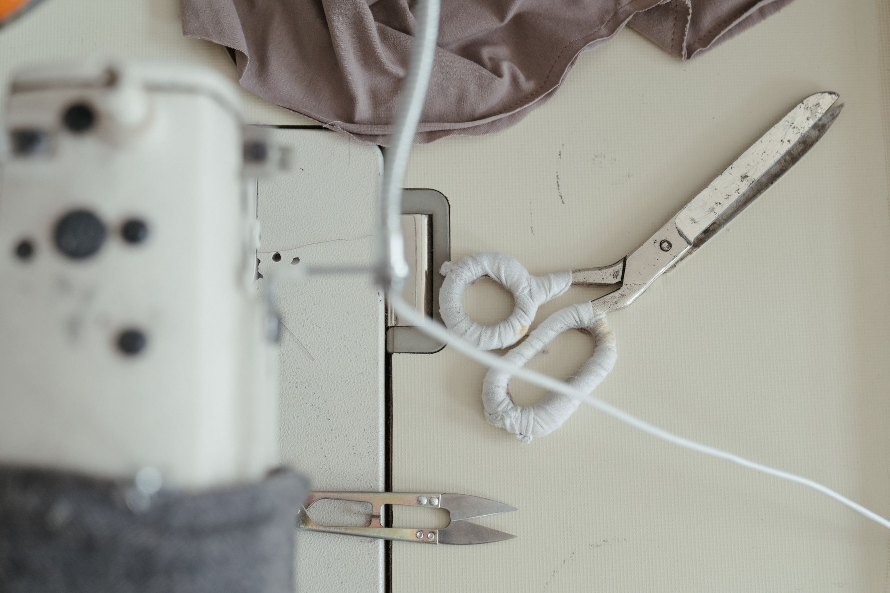

A textil öltözteti fel a teret
Egyedi függönyök, párnák, terítők és ágytakarók, méretre tervezve és a saját varrodámban kézzel varrva. Az anyagválasztástól a felszerelésig egy kézben.
Egyedi függönyök, párnák, terítők és ágytakarók, méretre tervezve és a saját varrodámban kézzel varrva. Az anyagválasztástól a felszerelésig egy kézben.

Sötétítő és fényáteresztő függönyök kézzel behúzott ráncolással, paszpóllal, kontrasztszegéllyel. A karnistól az esésig minden részletet a térhez igazítok.

Díszpárnák, ülőpárnák és textil kiegészítők prémium anyagokból, cipzáras, mosható huzattal, a tér textiljeivel összehangolva.

Asztali futók, terítők és ágytakarók egyedi méretre, szegéllyel vagy szalagdíszítéssel. Textilek, amelyek generációkat kiszolgálnak.

Kézzel csomózott mandalák, függönyök és térelválasztók pamut zsinórból. Egy nagyobb térelválasztó több ezer csomó, nincs két egyforma darab.
Pontos mérés, fényviszonyok, belmagasság, karnis és a tér színei. A jó függöny a helyszínen kezdődik.

Mintakollekciókból választunk, az árnyalatokat a saját fényviszonyaiban próbáljuk, nem a boltban.
Kézi ráncolás, gondos szegés, paszpól. Minden darab az adott ablakra készül.

Karnisra igazítás, vasalás, az esés beállítása a helyszínen. Akkor engedem el, amikor pont úgy esik, ahogy kell.
Felmérést kérek